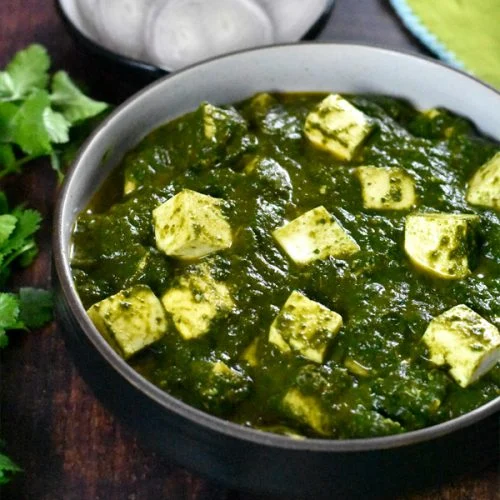

A delicious Indian dish, good on its own or served with rice or naan bread.
Substitute tofu for paneer to make it vegan.
The dish has magnesium, folate, vitamin A, vitamin K, potassium, calcium and so much more. Priya says,
'Since palak paneer is full of calcium and phosphorous it plays a role in heart and muscle function.
' According to Priya, the vitamins B2 and B12 in cottage cheese help convert the food into usable energy.

:max_bytes(150000):strip_icc():format(webp)/9170789-4b29dc9764144713baf0f9841761cdf4.jpg)
Heat 1 tablespoon olive oil in a skillet over medium heat;
cook and stir onion until slightly tender, about 5 minutes.
Add garlic, coriander, turmeric, garam masala, red pepper
flakes, curry powder, cumin, and salt;
cook and stir until fragrant, about 1 minute.
Mix water, spinach, tomatoes,
and ginger into the onion mixture; simmer for 20 minutes.
Remove from heat and cool slightly, about 5 minutes.
Transfer spinach mixture to a blender and blend until smooth.
Heat remaining 1 tablespoon olive oil in a skillet over medium heat;
cook and stir paneer until lightly browned, about 5 minutes.
Stir pureed spinach mixture into skillet with paneer.
Cook until heated through, 3 to 5 minutes.